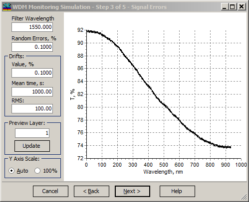

WDM Monitoring Simulation - Signal Errors
WDM Monitoring Simulation - Signal Errors
Navigation: OptiLayer Menu Commands > Analysis Menu > WDM Monitoring Simulation >
WDM Monitoring Simulation - Signal Errors
` <wdm_monitoring_simulation_pars.html>`__ ` <wdmerroranalysis.html>`__ ` <wdm_error_analysis___simulatio.html>`__

At the second step of the WDM Monitoring Simulation dialog, errors in measured spectral transmittance data should be specified.
The Filter Wavelength entry field allows for specifying a filter monitoring wavelength. The default value corresponds to the Control Wavelength of the currently loaded design.
The Random Errors entry field specifies the level of random noise in measured transmittance data.
The Drifts group of entry fields specifies drifts of the measured signal over time. The Value entry field allows the user to specify the level of signal drifts. The Mean time entry field allows for specifying an average time of signal drifts, and the RMS field specifies the deviations of characteristic drifts interval from the average value.
The Preview Layer entry field allows the user to select a layer number for previewing the transmittance signal. The Update button allows for simulating a new set of signal data and replots a simulated transmittance versus layer thickness.
The Y Axis Scale radio button allows for selecting the type of scaling for this preview screen.
See also: